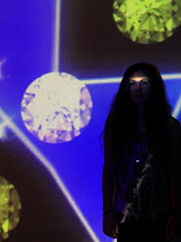

Hello, we're
Virginia Commonwealth University
School of the Arts.
Nice to meet you.
Located in Richmond, Virginia
Sister campus in Doha, Qatar
Connections all over the world
Why?
VCUarts is the #1 ranked public art and design program in the country.
So says US News & World Report (since 2003)
(Show all our top rankings)
Sculpture #1
Painting + Printmaking #5
GDES #1
But our ranking is just part of the story.
VCUarts is an amazing VALUE.
And our relatively low tuition is just part of that equation.
Richmond is an incredible city with a low cost-of-living.
It is...
Beautiful.
Inspiring.
Art-centric.
Historic.
Always something cool to do and see.
Our relatively low tuition
and financial aid assistance
and the quality of a VCUarts education
and the reputation and ranking of VCUarts
and the fact that >50% of freshman arts applicants receive scholarships
=
awesome.
(value)Did you know?
Richmond is Outdoor Magazine's #1 River City
Third most tattooed city in the U.S.
Countless annual festivals
(show Folk Festival, Carytown Watermelon Festival, Greek Festival...)A Top 10 Vegan-Friendly City
(according to PETA)Close to everything you'd want
(Create a graphic that shows proximity to DC, mountains, beach, and 1 hour plane ride to NYC)Map showing VCU in Richmond
Map showing VCUarts at VCU (arts buildings. Maybe show dorms???)
VCU is a major public research institution

VCUarts is FULLY accredited.
(Not all art schools are)This means we've passed rigorous evaluation criteria
Now let's talk about our majors
What is AFO?
Art Foundation is the first-year program for students who wish to enter:
Art Education
Communication Arts
Craft/Material Studies
Fashion Design
Graphic Design
Interior Design
Kinetic Imaging
Painting and Printmaking
Photography and Film
Sculpture + Extended Media.
A studio-based experience in the fundamental issues of art and design. It exposes students to a vast forum of ideas & concepts preparing them for a wide range of disciplines. When in AFO, students apply to their departments of choice.
The large majority are accepted into their first choice.
(whew!)Clip of video about AFO. Photos of AFO.
BFA vs BA
What's the difference between a Bachelor of Fine Arts (BFA) degree and and Bachelor of Arts (BA) Degree?
BFA
A professional studio-based degree
2/3 focus on major
1/3 focus on liberal arts and sciences
BA
A liberal-arts based, general arts degree
1/3 focus on major
2/3 focus on liberal arts and sciences
Art Education
Bachelor of Fine Arts (BFA)
Apply to Art Foundation?
Yes.
Art Ed combines art and teaching.
Train to be an idea-based artist and learn to design instructional strategies. Spend time student-teaching in local schools.
Art Education grads become teachers, school administrators, artists…
Art History
Bachelor of Arts (BA)
Apply to Art Foundation?
No.
Art History and Architectural History concentrations are offered.
Students study two- and three-dimensional works of art in a variety of media, including painting, photography, sculpture, architecture, film and performance art.
Art historians examine the creation and meaning works of art as well as their social, political, and historical contexts.
Internships at major museums, galleries, historic buildings and archeological sites. Students have traveled to Peru, Scotland, Tibet, Ecuador, and Spain.
Art History grads become museum curators, conservationists, researchers, gallery administrators, restoration specialists, appraisers, art consultants…
- Jenny Ramirez Art History Teacher, Virginia Military Institute
- Emmanuelle Delmas-Glass Collections Information Specialist, Yale Center for British Art
- Elizabeth Holcombe Fedorko Author & business owner
-  Annapurna Kumar Visual Performer
Cinema
Bachelor of Arts (BA)
Apply to Art Foundation?
No.
What’s the difference between a BA in Cinema and a BFA in Photography and Film?
Cinema offers a BA degree. Students learn to create narrative films and work in teams. Emphasis on writing, casting, directing, camera work and editing in the collaborative, industry model of production.
Photography and Film offers a BFA degree. Students work individually and in small groups to create artisanal narrative shorts, documentaries and single-channel experimental films and videos.
Focus on narrative film and combine the use of new digital technologies
Cinema grads become film makers, directors, editors, producers, critics, sound designers, directors of photography, production designers…
Communication Arts
Bachelor of Fine Arts (BFA)
Apply to Art Foundation?
Yes.
Illustration.
Medical Illustration.
Electronic imaging for print, television, film and web.
The study and exploration of the qualities, disciplines and technologies that enable us to create and communicate with insight, vision and voice.
Communication Arts grads become art directors, illustrators, animators, 3-D modelers, graphic novelists…
-
Arnold P. Dog Professional
-
-
-
Craft/Material Studies
Bachelor of Fine Arts (BFA)
Apply to Art Foundation?
Yes.
Metal – make objects and jewelry with soldering, stone setting, hollow forming, and enameling techniques
Fiber – learn to weave, embroider, and knit, and silkscreen on cloth
Wood – study carving, joinery and lathe work to make sculpture and furniture
Glass – explore glassblowing, slumping, lampworking, and casting
Clay – learn hand building or wheel throwing pottery techniques
Within these areas, students develop concepts and personal direction with an emphasis on using materials wisely and skillfully to express ideas through objects and images.
Fiber is ranked #1
among all public
U.S. art & design programs.
US News & World Report
Glass is ranked #1
Metal is ranked #5
Clay (ceramics) is ranked #6
Craft grads become textile, furniture and jewelry designers, studio artists, craftspersons…
-
-
-
-
Dance & Choreography
Bachelor of Fine Arts (BFA)
Apply to Art Foundation?
No.
Equal focus on performance and choreography.
Students train in modern dance and ballet techniques as well as in creative-track courses.
VCU Dance is represented annually at major dance competitions.
Dance grads become choreographers, performers, dance teachers, artistic directors, dance therapists…
-
-
-
-
Fashion Design
Bachelor of Fine Arts (BFA)
Apply to Art Foundation?
Yes.
Learn both the creative and professional processes for concept development, fashion illustration, patternmaking, draping and garment construction.
Fashion Design grads become fashion designers, product developers, fashion historians, associate designers…
-
-
-
-
Graphic Design
Bachelor of Fine Arts (BFA)
Apply to Art Foundation?
Yes.
VCUarts Graphic Design is ranked #1
among all public U.S. art & design programs.
US News & World Report
Graphic designers integrate form and information for the purpose of effective visual communication. Print. Web. Anyplace else where ideas are communicated.
Graphic Design grads become creative directors, art directors, graphic designers, web designers…
-
-
-
-
Interior Design
Bachelor of Fine Arts (BFA)
Apply to Art Foundation?
Yes.
Problem solving for the near built environment. It’s not about merely making a room look good.
{VIDEO OF JENNIFER FARRIS (ALUM) EXPLAINING WHAT INTERIOR DESIGN IS.}
Interior Design grads become contract designers, hospitality designers, retail designers, residential designers, space planners…
-
-
-
-
Kinetic Imaging
Bachelor of Fine Arts (BFA)
Apply to Art Foundation?
Yes.
For students with vivid imaginations and inexhaustible curiosity, attracted to video, sound or animation art.
Kinetic Imaging grads become media artists, producers, motion graphic artists, animators, video editors, web designers, game artist, film makers, sound technicians…
-
-
-
-
Music
Bachelor of Arts (BA) and Bachelor of Music (BM)
Apply to Art Foundation?
No.
Students study in one of these areas:
Performance
Guitar, Percussion, Piano, Strings, Vocal, Woodwind, or Brass emphasis, Jazz Studies
Students have the chance to perform and study with musicians around the world
Music Education
Teachers perform regularly and are leaders in the fields of music performance and music education.
Music grads become solo and orchestral performers, music educators, opera singers, music managers, band directors, conductors, professors…
-
-
-
-
Painting + Printmaking
Bachelor of Fine Arts (BFA)
Apply to Art Foundation?
Yes.
VCUarts Painting is ranked #2 among all public U.S. art programs. Printmaking is ranked #9. US News & World Report
Practice and theory as a foundation for independent exploration and artistic development.
Exceptional, sun-filled facilities and enhanced computer lab
Painting and Printmaking grads become artists, printmakers, painters, museum administrators, art critics…
-
-
-
-
Photography + Film
Bachelor of Fine Arts (BFA)
Apply to Art Foundation?
Yes.
VCUarts Photography is ranked #4 among all public U.S. art & design programs. US News & World Report
Students may focus on still photography, filmmaking, or both.
Study traditional and contemporary photographic and film media.
Photography + Film grads become photographers, film editors, filmmakers…
-
-
-
-
Sculpture + Extended Media
Bachelor of Fine Arts (BFA)
Apply to Art Foundation?
Yes.
VCUarts Sculpture is ranked #1 among all public and U.S. art & design programs. US News & World Report
One of the largest and most widely recognized programs in the country.
Learn construction methods and techniques and how to communicate ideas through artworks.
"Extended Media" includes video, performance, robotic, sound, and more.
Sculpture grads become art educators, sculptors, museum and gallery owners, designers…
-
-
-
-
Theatre
Bachelor of Fine Arts (BFA) and Bachelor of Arts (BA)
Apply to Art Foundation?
No.
BA: Theatre design
BFA: Performance; lighting design; stage management
The performer works with voice, body & imagination.
The designer/technician is involved in studio classes and practical application.
Theatre grads become actors, set designers, costume designers, light designers, producers, stage managers…
-
-
-
-
But your major is just part of your education.
Internships
Local, regional & national organizations tap our talent
arts.vcu.edu/internshipsResearch grants
http://arts.vcu.edu/opportunities/research/undergraduate/undergraduate-research-grant/ Get some good looking stuff from here. (similar to alumni section)
Honors - Thy Perks
Student organizations
There are thousands! And you can start your own.
Sports
Every sport you can think of and our football team remains undefeated!
(We have no football team.)Basketball is the new football!
VCU Rams Basketball!
Award winning dining hall
Amazing gym
That’s VCUarts. What about JOBS?
In 12 months, 80% of VCUarts alumni are employed in their first job.
34% of VCUarts students have their first jobs BEFORE leaving school.
80% of VCUarts alumni are satisfied in their careers.
Career counselor and helpful blog
Show Angie Bacskocky video
Show infographics that Teresa made (is making) of double majors and minors
(At end. How to apply. The procedures!)
Vertical Slides
Slides can be nested inside of other slides, try pressing down.
Basement Level 1
Press down or up to navigate.
Basement Level 2
Cornify

Basement Level 3
That's it, time to go back up.
Slides
Not a coder? No problem. There's a fully-featured visual editor for authoring these, try it out at http://slid.es.
Point of View
Press ESC to enter the slide overview.
Hold down alt and click on any element to zoom in on it using zoom.js. Alt + click anywhere to zoom back out.
Works in Mobile Safari
Try it out! You can swipe through the slides and pinch your way to the overview.
Marvelous Unordered List
- No order here
- Or here
- Or here
- Or here
Fantastic Ordered List
- One is smaller than...
- Two is smaller than...
- Three!
Transition Styles
You can select from different transitions, like:
Cube -
Page -
Concave -
Zoom -
Linear -
Fade -
None -
Default
Themes
Reveal.js comes with a few themes built in:
Sky -
Beige -
Simple -
Serif -
Night -
Default
* Theme demos are loaded after the presentation which leads to flicker. In production you should load your theme in the <head> using a <link>.
Global State
Set data-state="something" on a slide and "something"
will be added as a class to the document element when the slide is open. This lets you
apply broader style changes, like switching the background.
Custom Events
Additionally custom events can be triggered on a per slide basis by binding to the data-state name.
Reveal.addEventListener( 'customevent', function() {
console.log( '"customevent" has fired' );
} );
Slide Backgrounds
Set data-background="#007777" on a slide to change the full page background to the given color. All CSS color formats are supported.
Image Backgrounds
<section data-background="image.png">Repeated Image Backgrounds
<section data-background="image.png" data-background-repeat="repeat" data-background-size="100px">Background Transitions
Pass reveal.js the backgroundTransition: 'slide' config argument to make backgrounds slide rather than fade.
Background Transition Override
You can override background transitions per slide by using data-background-transition="slide".
Clever Quotes
These guys come in two forms, inline:
“The nice thing about standards is that there are so many to choose from”
and block:
“For years there has been a theory that millions of monkeys typing at random on millions of typewriters would reproduce the entire works of Shakespeare. The Internet has proven this theory to be untrue.”
Pretty Code
function linkify( selector ) {
if( supports3DTransforms ) {
var nodes = document.querySelectorAll( selector );
for( var i = 0, len = nodes.length; i < len; i++ ) {
var node = nodes[i];
if( !node.className ) ) {
node.className += ' roll';
}
};
}
}
Courtesy of highlight.js.
Intergalactic Interconnections
You can link between slides internally, like this.
Fragmented Views
Hit the next arrow...
... to step through ...
any type- of view
- fragments
Fragment Styles
There's a few styles of fragments, like:
grow
shrink
roll-in
fade-out
highlight-red
highlight-green
highlight-blue
Spectacular image!

Export to PDF
Presentations can be exported to PDF, below is an example that's been uploaded to SlideShare.
Take a Moment
Press b or period on your keyboard to enter the 'paused' mode. This mode is helpful when you want to take distracting slides off the screen during a presentation.